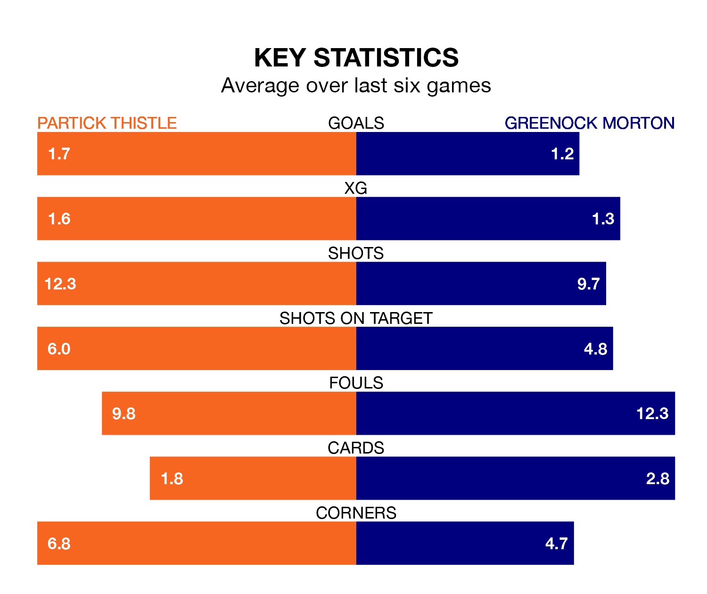

Partick Thistle host Greenock Morton in Saturday's match at Wyre Stadium at Firhill looking to bounce back from defeat last time out in the Championship.
Thistle, who sit third in the league after 28 games, fell to a 1-0 home defeat to Raith Rovers on Tuesday.
They face a Greenock Morton side who also lost their last match, a 1-0 defeat to Dundee United, and who sit fourth in the table.
With 53 goals in 28 games so far this season, Partick Thistle are the league's second-highest scorers with 1.9 goals per game. But they are conceding more than average too, letting in 48 goals at a rate of 1.7 per game.
Greenock Morton, meanwhile, are below average scorers, with 1.3 goals per game, compared to a league average of 1.4. They have conceded 1.1 goals per game.
In Brian Graham, Thistle have the league's sharpest shooter so far this season. He has notched 16 goals in 26 appearances.
His goal rate of one every 134 minutes is quicker than that of Robbie Muirhead, the Ton's top scorer with a goal every 230 minutes, and a total of nine goals in 24 games.
The hosts are in bad form in the Championship, with no wins and three draws from their last six games.
With two wins and two draws over that period, the away team's form is better – they have taken eight points from 18, compared to Partick Thistle's three.
In the last 10 years, Partick Thistle and Greenock Morton have played each other on 21 occasions. Partick Thistle won 11 of them, Greenock Morton six, and they drew four times.
On average, Thistle scored 1.6 goals and the Ton 1.1 in those matches.
Their last meeting was on January 13, when they played out a 1-1 draw.
Updated: 15:10 (UTC), 15/03/24